Morphognostic honey bees communicating nectar location through dance movements
Honey bees are social insects that forage for flower nectar cooperatively. When an individual
forager discovers a flower patch rich in nectar, it returns to the hive and performs a "dance" in
the vicinity of other bees that consists of movements communicating the direction and distance to
the nectar source. The bees that receive this information then fly to the location of the nectar to
retrieve it, thus cooperatively exploiting the environment. This project simulates this behavior in
a cellular automaton using the Morphognosis model. The model features hierarchical spatial and temporal
contexts that output motor responses from sensory inputs. Given a set of bee foraging and dancing
exemplars, and exposing only the external input-output of these behaviors to the Morphognosis learning
algorithm, a hive of artificial bees can be generated that forage as their biological counterparts do.
Keywords: Honey bee foraging dance, artificial animal intelligence, Morphognosis, cellular automaton, artificial neural network.
Introduction
Honey bees, apis mellifera, are fascinating social insects. They are also smart, even able to count and add .
However, it is their ability to communicate symbolically in the form of a "dance" indicating the direction and distance
to a nectar source that is truly astonishing ,
especially considering that the use of symbols is rare even in more neurologically complex animals. The dance, done
by a bee in the presence of other bees in the hive after discovering nectar at a locale outside the hive, recruits
bees to forage at the indicated location, thus acquiring more nectar than solitary foraging would otherwise.
This paper describes artificial honey bees that gather nectar and perform the foraging dance. It employs a general machine
learning system, Morphognosis, which acquires behaviors by example and enables an artificial organism to express those behaviors.
It will be shown that simulating nectar foraging is a difficult task for unaugmented machine learning methods, but with the support
of the spatial and temporal contextual information that Morphognosis provides, it can be accomplished.
As a disclaimer, it should be noted that this project is not intended to offer new or additional findings about honey bees. Its goal
is to simulate a biologically inspired behavior in a dynamic environment. If the convergence of nature and artifice at the behavioral
level provides insights about biological mechanisms, that would be serendipitous.
Honey bees have been the focus and inspiration for a number of simulation initiatives:
- Detailed colony behavior .
- Swarming and group behavior algorithms .
- Flight neural network .
- Visual system neural network .
- Odor learning circuits .
- Spiking neural network that reacts to nectar .
The colony simulation allows a user to observe how bees are affected by various environmental conditions, such as weather.
Algorithms for a number of group behaviors, optimal foraging strategies among them, are cited in the swarming paper.
The other projects simulate bee-specific neural mechanisms. For example, the odor learning project found that simulated honey
bees lacking mushroom bodies, the insect equivalent of the cerebral cortex, may still be able to learn odors. The spiking
neural network measures how an abstracted model of a bee's nervous system reacts to nectar-related stimuli.
In contrast, the contribution of this project is to simulate honey bee behavior with a general purpose connectionist model
that learns from external observations and which is applicable to arbitrary behavioral simulation tasks, not just the honey
bee foraging task.
A number of years ago I explained to a coworker how my dissertation program , a model of instrumental/operant
conditioning, could learn various tasks through reinforcement. He then asked me how "smart" it was. I put him off, not having
a ready answer. He persisted. So I blurted out that it was as smart as a cockroach (which it is not). To which he replied,
"Don't we have enough real cockroaches?" Fast forward to this project. Don't we have enough real honey bees? (Maybe we don't !)
The point of this story is that the question of why anyone should work on artificial animal intelligence is, at least on the surface,
a reasonable one, given our species unique intellectual accomplishments. Thus, historically, AI has mostly focused on human-like
intelligence, for which there are now innumerable success stories: games, self-driving cars, stock market forecasting, medical
diagnostics, language translation, image recognition, etc. Yet the elusive goal of artificial general intelligence (AGI) seems as
far off as ever. This is because these success stories lack the
"general" property of AGI, operating as they do within narrow, albeit deep, domains. A language translation application, for
example, does just that and nothing else.
Anthony Zador expresses this succinctly: "We cannot build a machine capable of building a nest, or stalking prey, or
loading a dishwasher. In many ways, AI is far from achieving the intelligence of a dog or a mouse, or even of a spider, and it does
not appear that merely scaling up current approaches will achieve these goals."
I am in the camp that believes that achieving general animal intelligence is a necessary, if not sufficient, path to AGI. While
imbuing machines with abstract thought is a worthy goal, in humans there is a massive amount of ancient neurology that underlies
this talent.
Hans Moravec put it thusly : "Encoded in the large, highly evolved sensory and motor portions of the human brain is a billion
years of experience about the nature of the world and how to survive in it. The deliberate process we call reasoning is, I believe,
the thinnest veneer of human thought, effective only because it is supported by this much older and much more powerful, though usually
unconscious, sensorimotor knowledge. We are all prodigious Olympians in perceptual and motor areas, so good that we make the difficult
look easy. Abstract thought, though, is a new trick, perhaps less than 100 thousand years old. We have not yet mastered it. It is not
all that intrinsically difficult; it just seems so when we do it."
So how should we proceed? Emulating organisms at the level of neurons (whole-brain emulation) is a possible approach to understanding
animal intelligence. However, efforts to do this with the human brain have met with little success . Scaling down to mice is
an option. The human brain dwarfs the mouse brain, but even mouse brains are daunting: a cubic milliliter of mouse cortex contains
900,000 neurons and 700,000,000 synapses . At much a simpler scale, years have been spent studying the
relationship between the connectome of the nematode C. elegans , with only 302 neurons, and its behaviors, but even this
creature continues to surprise and elude full definition. Nevertheless, some researchers believe that it is now feasible for the
whole-brain approach to be applied to insects such as the fruit fly, with its 135,000 neurons . Partial brain analysis
is also an option. For example, the navigation skills of honey bees are of value to drone technology. Fortunately, it appears that
the modular nature of the honey bee brain can be leveraged to replicate this skill .
Another issue with emulation is the difficulty of mapping the relationship between neural structures and behaviors .
For AI, this is a key aspect, as behavior is the goal. Nature is a blind tinkerer.
For example, despite the enthusiasm following the mapping of the human genome, the mechanisms by which genes express proteins,
and thus phenotypes, is not as modular as hoped for. Rather, it is extraordinarily complex .
In artificial systems, artifacts and quirks left over by evolution can introduce unnecessary complexity.
The field of artificial life (Alife) offers another path to AGI. This path starts with simulating life, and letting evolution
optimize artificial organisms to achieve intelligence as a fitness criteria. For example, Schöneburg's "alternative path to AGI", sees
intelligence emerging from holobionts, which form cooperating collectives of artificial agents.
Morphognosis carries on the trend set by artificial neural networks to abstractly model neurological computing functions.
However, the approach is primarily to simulate at the behavioral level. Considering the vastly different "clay" that biological and
computing systems are built with, cells vs. transistors and software, behavioral simulation seems a good place to converge.
I believe the famous Turing Test follows this line of thought.
Morphognosis comprises an artificial neural network (ANN) enhanced with a framework for organizing sensory events into hierarchical
spatial and temporal contexts. Nature has hard-wired knowledge of space and time into the brain as way for it to effectively interact
with the environment . These capabilities
are modeled by Morphognosis. Interestingly, grid cells also appear in humans to be capable of representing not only spatial relationships,
but non-spatial multidimensional ones, such as the relationships between members of a group of people .
The bee dancing behavior, as a sequential process, has temporal components. For example a bee must remember a past event, the existence
of surplus nectar in a flower, and use that information to perform a dance that indicates both direction and distance to the nectar.
In addition, bees that observe a dance must internally persist the distance signal and use it to measure how far to fly.
Sequential processes are type of task that recurrent artificial neural networks (RNNs) have been successfully applied
to . However, RNNs do not inherently also support spatial information. RNNs
maintain internal feedback that allow them to retain state information within the network over time. This contrasts with Morphognosis,
where the input itself contains temporal state information.
Morphognosis was partly inspired by some what-if speculation. In simpler animals, the "old" brain (amygdala, hypothalamus, hippocampus,
etc.) deals more directly with an unfiltered here-and-now version of the environment. Considering nature's penchant for repurposing
existing capabilities, might it be that in more complex animals a purpose of the neocortex, sitting atop the old brain and filtering
incoming sensory information, is to track events from distant reaches of space and time and render them, as though near and present, to
the old brain whose primal functions have changed little over time?
I have previously conducted research explorations into a number of issues that differentiate conventional AI from natural
intelligence. These include context, motivation, plasticity, modularity, instinct, and surprise .
Morphognosis, in particular, has been previously applied to the task of nest-building by a species of pufferfish .
To date, including the honey bee project, Morphognosis has been implemented as a cellular
automaton , as the rules that it develops while learning are ideally captured in a grid
structure. Conceptually, however, Morphognosis is not tied to the cellular automaton scheme.
The next section describes Morphognosis and details of the behavior and implementation of the honey bees. A section with the results
of testing pertinent variables follows. A subsection also presents by way of comparison the performance of a recurrent neural network
(see LSTM performance).
Description
This section first briefly describes the Morphognosis model. The honey bee behavior and implementation are described next.
Morphognosis overview
Morphognosis (morpho = shape and gnosis = knowledge) aims to be a general method of capturing contextual information
that can enhance the power of an artificial neural network (ANN). It provides a framework for organizing spatial and temporal sensory
events and motor responses into a tractable format suitable for ANN training and usage.
Introduced with several prototype tasks , Morphognosis has also modeled the locomotion and foraging of the
C. elegans nematode worm and the nest-building behavior of a pufferfish . Morphognosis is a temporal
extension of a spatial model of morphogenesis .
Morphognostics
The basic structure of Morphognosis is a cone of sensory event recordings called a morphognostic, shown in Figure 1. At the apex of
the cone are the most recent and nearby events. Receding from the apex are less recent and possibly more distant events. A morphognostic
can thus be viewed as a structure of progressively larger nested chunks of space-time knowledge that form a hierarchy of contexts. A set
of morphognostics forms long-term memories that are learned by exposure to the environment. Scaling can be accomplished by aggregating
event information. This means that more recent and nearby events are recorded in greater precision than events more distant in space and time.
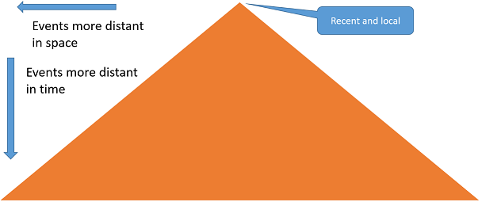
Figure 1 - Morphognostic event cone.
The following are possible definitions of the spatial and temporal morphognostic neighborhoods. The software is parameterized to
permit many variations of these definitions.
Morphognostic spatial neighborhoods
A cell defines an elementary neighborhood:
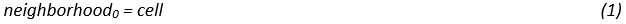
A non-elementary neighborhood consists of an NxN set of sectors surrounding a lower level neighborhood:
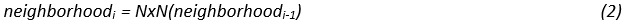
Where N is an odd positive number.
The value of a sector is a vector representing a histogram of the cell type densities contained within it:
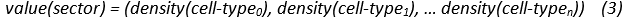
Morphognostic temporal neighborhoods
A neighborhood contains events that occur within a duration, which is a time window between the present and some time in the past.
Here is a possible method for calculating the duration of each neighborhood algorithmically:
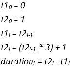
Morphognostic example
Figure 2 is an example of a morphognostic implemented in a cellular automaton as a nested set of 3x3 neighborhoods and
aggregated histograms of cell state value densities. On the left is the cellular automata grid that contains various cell state
values. Moving right is a 3x3 neighborhood surrounding one of the cells of interest. This neighborhood is sensed in the immediate
present. Moving right to the 9x9 neighborhood, each sector is a 3x3 neighborhood aggregated in space and time. Thus the densities
are variable. The rightmost panel continues this theme to a 27x27 neighborhood.
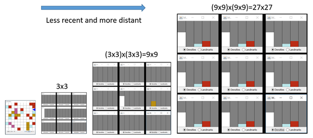
Figure 2 - Cellular automaton implementation of Morphognosis.
Metamorphs
In order to navigate and manipulate the environment, it is necessary for an agent to be able to respond to the environment.
A metamorph embodies a morphognostic?response rule. A set of metamorphs can be learned from a manual or programmed sequence of
responses within a world.
Metamorphs are used to train an ANN, as shown in Figure 3, to learn responses associated with morphognostic inputs. During
operation, the current morphognostic, representing the state of the environment, is input to the ANN to produce a learned response.
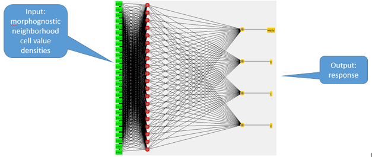
Figure 3 - Metamorph artificial neural network.
Honey bees
Behavior
A brief explanatory video:
Sensory and response capabilities
Senses:
External state:
- Hive presence.
- Nectar presence.
- In-hive bee nectar signal: Orientation and distance to nectar.
Internal state:
- Orientation.
- Carrying nectar.
Responses:
- Wait.
- Move forward.
- Turn in compass directions: N, NE, E, SE, S, SW, W, NW.
- Extract nectar.
- Deposit nectar.
- Display nectar distance.
World
Figure 4 shows a graphical view that shows a hive (central yellow area), three bees, and three flowers.
The topmost flower contains a drop of nectar to which the topmost bee, as best it can in a cellular grid, is
indicating the direction and an approximate distance to, as indicated by the orientation of the bee and the
length of the dotted line, respectively. The world is bounded by its edges, meaning bees cannot leave one edge
and appear on the opposite side. An attempt to move beyond the edge results in a forced random change of direction.
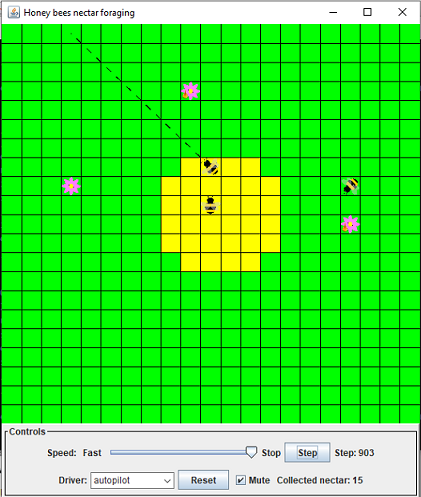
Figure 4 - Graphical view.
Bees
A bee occupies a single cell and is oriented in one of the eight compass directions and moves in the direction of its
orientation. Only one bee is allowed per cell. An attempt to move to an occupied cell is disallowed. If multiple bees
move to the same empty cell, a random decision is made to allow one bee to move. Bees can carry a single unit of nectar.
Bees are initialized in the hive at random positions and orientations.
Flowers
A flower occupies a single cell outside of the hive at a random location. A flower's cell may also be occupied by a
single visiting bee. Flowers are initialized with nectar, which after being extracted by a bee, will probabilistically
either replenish after a specific time or immediately replenish. In the latter case, the bee will sense the presence of
surplus nectar and will perform a dance to indicate its direction and distance once it returns to the hive. Flowers are
initialized at random locations.
Foraging
The bees forage in two phases. In phase one, the nectar discovery phase, a bee flies about semi-randomly until it
encounters a flower with nectar. Phase two is a deterministic process that deals with known nectar. Phase two is described below.
Once discovered, the bee extracts the nectar from the flower, flies directly to the hive and deposits the nectar in the hive.
If the bee, after depositing the nectar, remembers that the flower contained "surplus" nectar, meaning more nectar than the bee
could carry, it will commence a dance to indicate the direction and distance to the nectar to other bees in the hive, including
itself. The direction is indicated by orienting toward the nectar. The directions are confined to the eight compass points. The
distance is indicated by displaying a value for short or long distance. Both direction and distance can be sensed by bees in the hive.
The graphical view draws a short or long dotted line as a visual representation.
Once a bee completes the dance, it and any other bees in the hive that sensed the dance will proceed in the direction of
the nectar for the distance exhibited by the dance. If any of these bees encounters nectar en route, it will switch over to
extracting the nectar and returning with it to the hive, possibly performing a dance there. If no nectar is encountered en
route after traveling the indicated distance, the bee resumes phase one foraging.
If no surplus nectar was sensed after extracting the nectar, the bee will switch to phase one foraging immediately after
depositing the nectar.
Scenario
Figures 5 through 11 present a graphical nectar foraging scenario.
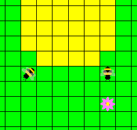
Figure 5 - Bee on right is moving down and is about to light on flower.
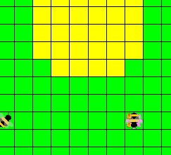
Figure 6 - Bee has extracted nectar from flower.
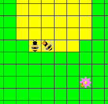
Figure 7 - Bee with nectar returns directly to the hive to deposit nectar.
It is also aware of surplus nectar remaining in the flower.
The other bee is incidentally also in the hive.
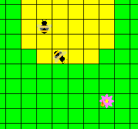
Figure 8 - Bee has deposited nectar in the hive. Since the bee knows there is surplus nectar,
the bee performs the first part of dance: orient toward nectar.
If there was no surplus nectar the bee would resume foraging. The other bee is moving about the hive.
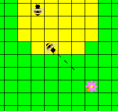
Figure 9 - The second part of dance: indicate a short distance to nectar, as shown by the dotted line.
The other bee has become aware of the direction and distance to the nectar.
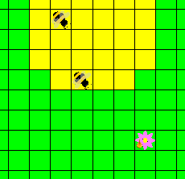
Figure 10 - Both bees respond to dance by orienting toward nectar.
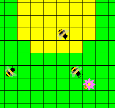
Figure 11 - Both bees move toward nectar.
Implementation
Modes
In autopilot mode, the bees forage programmatically. Autopilot mode generates metamorphs that are used
to train the neural network, as shown in Figure 12. Since phase one foraging consists of semi-random movements,
metamorphs are only generated in phase two, dealing with known nectar. Once trained, the bees can be switched to
metamorphNN mode, in which the neural network drives phase two behavior. Phase one behavior remains programmatic in
metamorphNN mode. While in metamorphNN mode, new metamorphs are not accumulated.
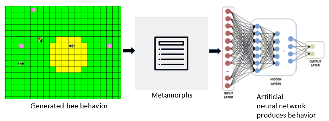
Figure 12 - Generating metamorphs to train the neural network.
Morphognostic
Each bee contains a morphognostic that maps its sensory inputs as spatial and temporal events that maintain its state in the environment.
Events
There are 22 binary event variables:
- hive presence
- nectar presence
- surplus nectar presence
- nectar dance direction north
- nectar dance direction northeast
- nectar dance direction east
- nectar dance direction southeast
- nectar dance direction south
- nectar dance direction southwest
- nectar dance direction west
- nectar dance direction northwest
- nectar dance distance long
- nectar dance distance short
- orientation north
- orientation northeast
- orientation east
- orientation southeast
- orientation south
- orientation southwest
- orientation west
- orientation northwest
- nectar carry
Neighborhoods
The morphognostic contains 4 3x3 neighborhoods, with durations and event mappings shown in Table 1.
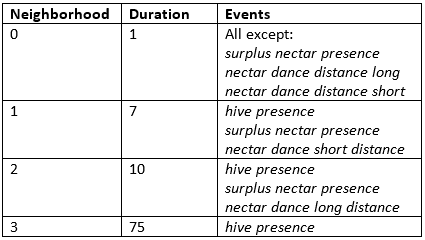
Table 1 - Morphognostic neighborhoods.
Neighborhood 0 maps "immediate" events, such as orientation, that are of use only in the present, as denoted by the duration of 1.
Neighborhood 1 has a duration, 7, that allows a bee to retain knowledge of the presence of surplus nectar and/or observation of a
dance indicating a short distance. The nectar dance short distance event, for example, allows the bee to "count" steps towards surplus nectar.
When the event expires due to the duration of the neighborhood it no longer affects the bee's behavior.
Neighborhood 2 serves the same purpose as neighborhood 1, except for nectar dance long distance event, for which the duration,
and thus steps, is greater than for the nectar dance short distance event.
Neighborhood 3, as well as all the other neighborhoods, track the presence of the hive as it is recorded in its 3x3 sectors
for a long duration of 75. This allows the bee to locate the hive after possibly lengthy foraging and return with nectar. On the
rare occasion that 75 steps are taken without returning to the hive, its location will be lost and the bee will be forced to return
to the hive without nectar.
Morphognostic neighborhoods can be configured to either keep a density/average value of event values over its duration,
or an on/off event value, meaning the event value is 1 if the event occurs at any time within the neighborhood's duration window.
Although surrendering information, the on/off configuration is chosen for the honey bees to improve training time while retaining
acceptable performance.
Example
Figures 13a and 13b show the state of the bee selected by the red square for neighborhood 2 of its morphognostic.
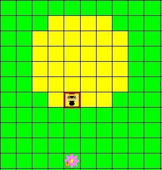
Figure 13a - Bee after dance indicating surplus nectar. The next step is to proceed toward nectar.
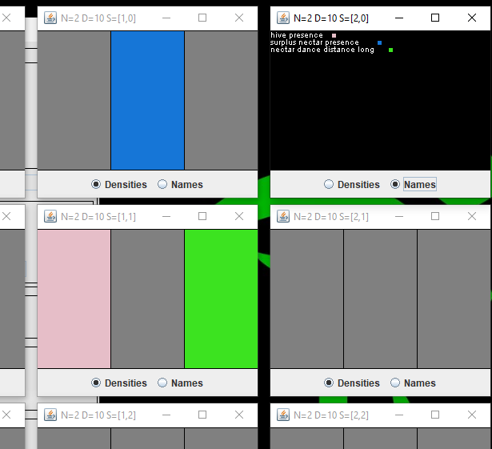
Figure 13b - Morphognostic neighborhood 2. At the center sector [1, 1] the hive presence and
nectar dance distance long events are recorded. The location of the surplus nectar is recorded in sector [1, 0] and was used to orient toward the surplus nectar as part of the dance.
Code
The Java code is available in a GitHub repository.
Results
Artificial neural network
The artificial neural network used was the MultiLayerPerceptron class in the Weka 3.8.3 machine learning library.
These parameters were used:
- learning rate = 0.1
- momentum = 0.2
- training epochs = 5000
The morphognostic configured as previously described, four 3x3 neighborhoods, produces 234 binary inputs to the network.
There are 14 outputs representing the honey bee responses.
Base level testing
Neither a randomly generated responses nor an untrained network resulted in any nectar collected over 20,000 steps in a 3
flower and 3 bee configuration.
Test flower and bee quantities
In order to determine how the system scales up, three variations of flowers and bees were tested: 3 flowers and bees,
5 flowers and bees, and 7 flowers and bees. The amount of nectar collected was used as a success metric.
The world was set at 21x21 cells, and the hive at radius 3. Flowers were initialized with nectar at random locations outside of the
hive. Bees were initialized randomly in the hive. The network was configured with 50 hidden neurons. Running the world for 20,000
steps on autopilot generated a metamorph dataset to train the neural network on. Datasets were generated for 10 trials.
Table 2 shows the average training dataset size and training accuracy. Of note is the increase in the number of metamorphs as
the world become more complex with additional flowers.
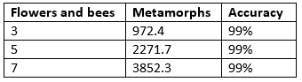
Table 2 - Number of metamorphs and training accuracy by varying flower and bee quantities.
Figure 14 shows the results of running programmatically (Autopilot) vs. with the trained network (Morphognosis).
The network performs comparably.
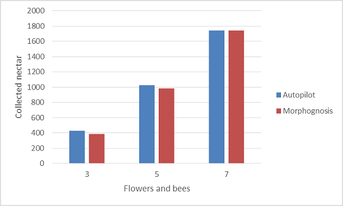
Figure 14 - Collected nectar for variations of flowers/bees.
Test hidden neurons
In order to observe how the system is affected by the neural network size, three variation of hidden neuron quantities
were tested: 25, 50, and 100.
Table 3 shows the average training dataset size and training accuracy.
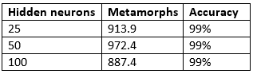
Table 3 - Number of metamorphs and training accuracy by varying hidden neurons.
Figure 15 shows the results, indicating that fewer hidden neurons are sufficient to achieve comparable performance.
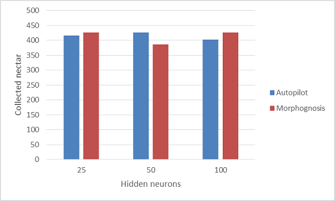
Figure 15 - Collected nectar for variations of hidden neurons.
Test hive radius
In order to observe how the system is affected by the hive size, two variation of hive sizes were tested: radii of 2 and 3.
Table 4 shows the average training dataset size and training accuracy. Of note is the reduction in metamorphs with a smaller hive.
This is likely due to fewer "trajectories" to and from the hive.
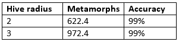
Table 4 - Number of metamorphs and training accuracy by varying hive radius.
Figure 16 shows the results, indicating that a smaller hive reduces the amount of nectar collected.
A possible contributing factor for this is congestion due to bee collisions.
Figure 16 - Collected nectar for variations of hive radius.
LSTM performance
A key ability of a honey bee is to be able to track the location of the hive as it forages. This allows it to return to
the hive with nectar. As a check of the ability of an unaugmented recurrent neural network (RNN) to perform this as a dead
reckoning task, a Long Short Term Memory (LSTM) recurrent network was trained given sequences
between 5 and 15 steps consisting of random orientation changes and forward movements probabilistically identical to those used
by the honey bees. The output is the direction to the starting position. Despite variations in the network capacity, the
training accuracy averaged approximately 30%, which was about the same as a random guess.
It is important to note a distinction between the training and testing regimens of RNNs, including LSTM, and Morphognosis.
RNNs are trained with batches of sequences. Each sequence, possibly having a variable length, has a beginning and end. A test
inputs a sequence to the trained network for classification and prediction. Morphognosis, in contrast, having its temporal
(and spatial) state embedded in the input, is not bounded by sequences: a honey bee generates a set of training metamorphs as
it forages continuously, with no delimiting breaks. This more closely resembles an animal learning situation in nature.
The LSTM network used is in the JANN 0.10 machine learning library.
Conclusion
The brain, a complex structure resulting from millions of years of evolution, can be viewed as a solution to problems posed by an
environment existing in space and time. Internal spatial and temporal representations allow an organism to navigate and manipulate the
environment. Following nature's lead, Morphognosis comprises an artificial neural network enhanced with a framework for organizing
sensory events into hierarchical spatial and temporal contexts.
The successful simulation of honey bee foraging behavior suggests future projects are worth undertaking:
- The metamorph structure bears a close resemblance to deep reinforcement learning training elements , suggesting the possibility of applying such learning to implement goal-seeking behavior.
- The aggregation scheme that supports scalability is a simple histogram-like method for dimensionality reduction:
- The use of ANN dimensionality reduction techniques, such as autoencoding, might scale with higher information content.
- The value of each neighborhood sector essentially represents a single centroid of sensory event values that have occurred in its space-time cube. An extension of this would be to retain multiple centroids within a sector, possibly weighted by frequency, increasing in number for higher level neighborhoods which encompass greater extents of space-time. This might increase the richness of behavioral variability while limiting information overload.
- The model is currently implemented in a cellular automaton spatial grid of cells. However, it is not inherently tethered to this platform and in fact may benefit from extending beyond it.
- The configuration of the morphognostic is vital to successful performance. For the honey bee task, this was a manual design. This process should be amenable to optimization/evolution methods.